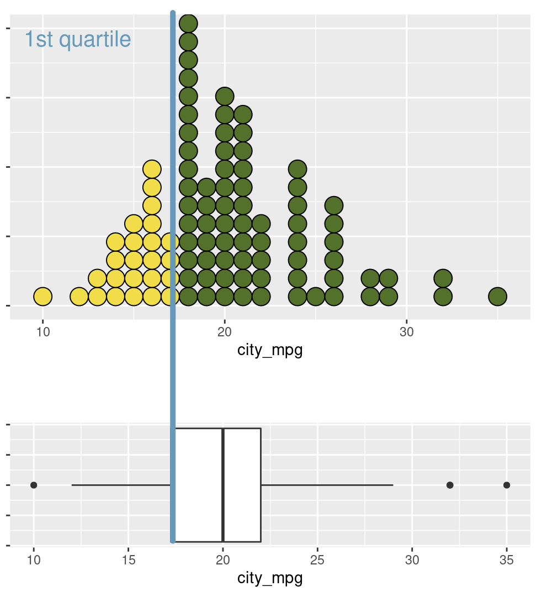
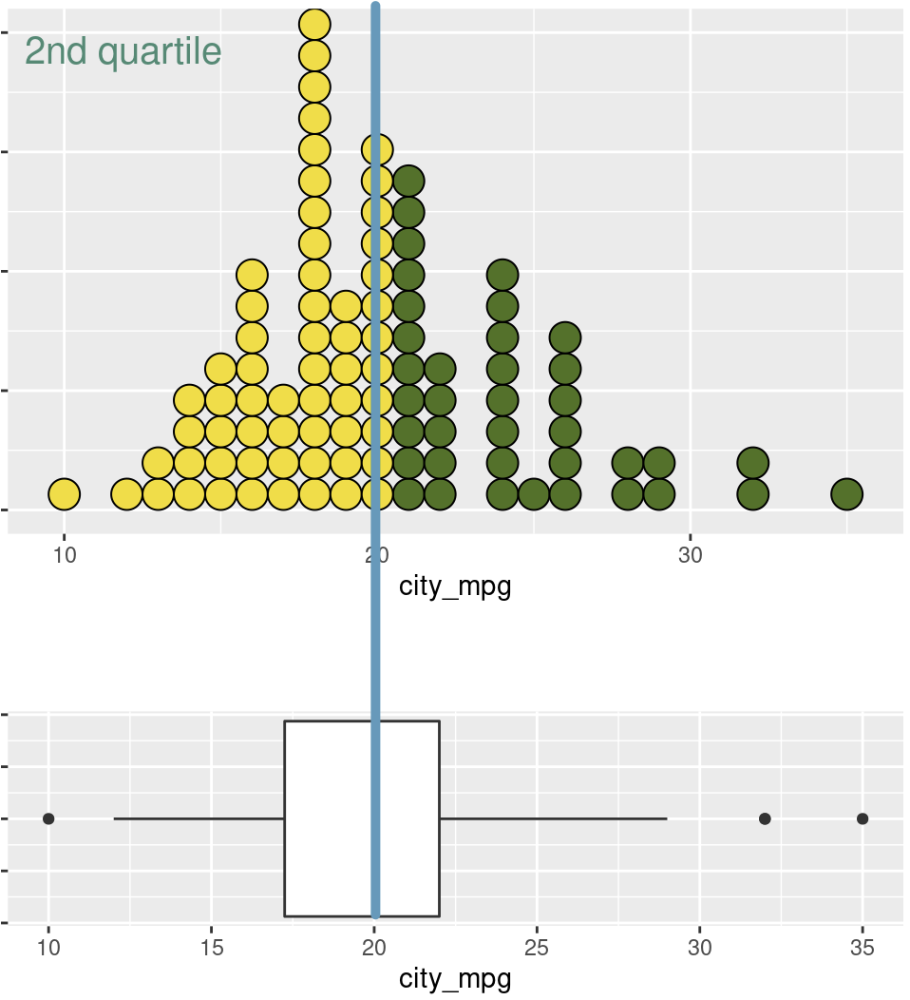
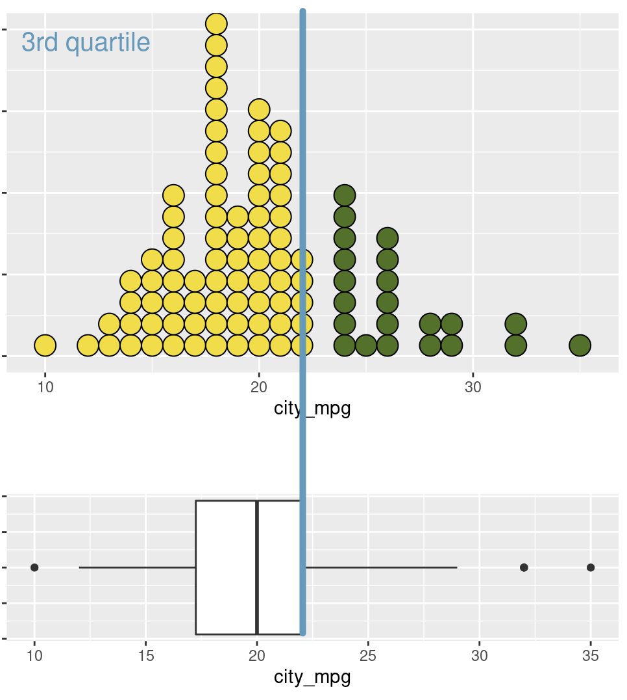
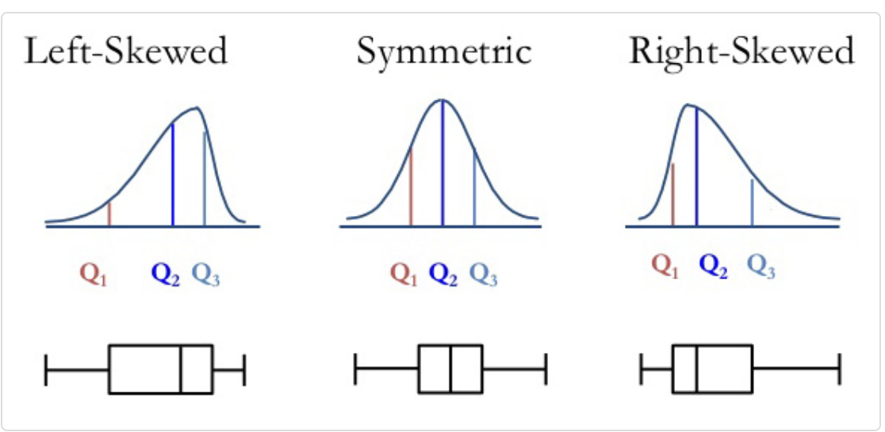

## loading libraries
library(tidyverse) # for data analysis and visualisation
library(here) # to organize files
library(praise) # for ocassional good vibes!Exploring numeric data (AE-3)
Important
This application exercise is due on 20 Sept at 2:00pm.
Load packages, data
Graphical EDA
Plotting is an important skill to learn for effective data analysis.
Dotplot
- Look at the coding below and one at a time remove each of the dotsize, alpha, and stackdir from the code. What does each of these inputs do? How does each input impact upon the plot?
ggplot(data = diamonds) + # the data
geom_dotplot(mapping = aes(x = price), # plot of price
dotsize = 0.005, # make the dots tiny
alpha = 0.3, # less opaque
stackdir = "center") #Dotplot vs boxplot
A boxplot provides summary information for the distribution of a variable. Here are some explanations (using different data) showing the purpose of the box portion of the boxplot.
The left line of the box is the quartile 1 (\(Q_1\)) or Q1 
praise()The middle line of the box is the median (\(Q_2\)) 
The right line of the box is the quartile 3 (\(Q_3\)) 
Looking at the above plots, count the percentage of yellow dots in each of the dotplots. Is there anything interesting about these values?
Compare and contrast a dotplot and a boxplot? What are the advantages and disadvantages of each? Think carefully about bimodal data and which plot you would use to show that aspect of a variable. Also think about outliers.
Boxplots
- Draw a boxplot of the price data from the diamonds dataset.
ggplot(data = INSERT) + # the data
INSERT(aes(x = INSERT)) # the variableBoxplot descriptions

- Use the information above to describe the boxplot of price.
Interquartile range (IQR)
The IQR of a variable is the length of the box in a boxplot. \[ IQR = Q_3 - Q_1\]
praise()Density plot
ggplot(data = diamonds) + # the data
geom_density(aes(x = price), # plot of price
bw = 1) # plot of price- What does the “bw” input in the geom_density function do? What is an appropriate value of “bw” for this data?
ggplot(data = diamonds) + # the data
geom_density(aes(x = price), # plot of price
bw = INSERT) + # binwidth
facet_wrap(~clarity) # faceting- What does the above plot suggest about the prices of diamonds for all levels of the variable clarity?
praise()- Draw a density plot for each value of cut. Describe the distribution of diamond price for each value of cut.
ggplot(data = diamonds) + # the data
geom_density(aes(x = price), # plot of price
bw = INSERT) + # binwidth
facet_wrap(~INSERT) # facetingComputing summary statistics
It is not sufficient to only draw plots, we must also know typical values (measures of center) of the data and how spread out these values (measures of spread).
Measures of center
We use the summarise() function when we expect the result to be one number.
Mean
diamonds %>% # the dataset
summarise(mean = mean(price)) # function that is used to compute mean of price9, Now compute the means of the variables \(x\), \(y\), \(z\), and \(carat\). (hint: You will need to insert a code chunk for each of these variables.)
praise()Last class we learned about the group_by() and used it to compute conditional probabilities. Today we will use it to compare the means of different subgroups.
diamonds %>% # the data
group_by(cut) %>% # for each value of cut
summarise(mean = mean(price), # find the mean
median = median(price)) # and the median- Compare the average values of price for each level of the cut variable. Considering the distributions of price for each level of cut in question 8, is the grouped mean a good measure of center for each level of cut? Why or why not?
Median
- How would you find the overall median of price?
Measures of spread
Variance
R also computes measures of spread.
diamonds %>% # the data
summarise(var = var(price)) # find the varianceBesides the direct method above, we can also do this computationally, by using the definition and finding the mean, subtracting, and squaring, then dividing.
diamonds %>% # the data
mutate(
mean_price = mean(price), # mean of price
deviation = price - mean_price, # subtraction from notes
deviation_sq = deviation^2) %>% # then square it
summarise(
mean_sq_deviation = sum(deviation_sq)/ # sum them
(nrow(diamonds) - 1)) # divide by n - 1Run each line of code above and ensure that you understand how this computation was developed. This shows us how to find \(s_{price}^2\) directly.
Find \(s_{x}^2\), \(s_{y}^2\), and \(s_{z}^2\) both directly, and computationally: having
Rdo the computation. (hint: you will need to insert 6 code chunks)
praise()Standard deviation
Ralso computes the standard deviation \(s\) directly:
diamonds %>% # the data
summarise(sd = sd(price)) # find the sdCan you use the computational approach (finding the mean_sq_deviation) from above to find the standard deviation of price \(s_{price}\)? (hint: you will need to use the sqrt() operator)
IQR
- The \(IQR\) can also be computed directly or indirectly:
diamonds %>% # the data
summarise(
q1 = quantile(price, 0.25), # find Q1
q3 = quantile(price, 0.75), # find Q3
iqr = q3 - q1 # now the IQR
)Range
diamonds %>% # the data
summarise(
min = min(price), # find min
max = max(price), # find max
range = max - min # and range
)- Of all of the measures of spread, which do you think are sensitive to skewed data and outliers? Why?